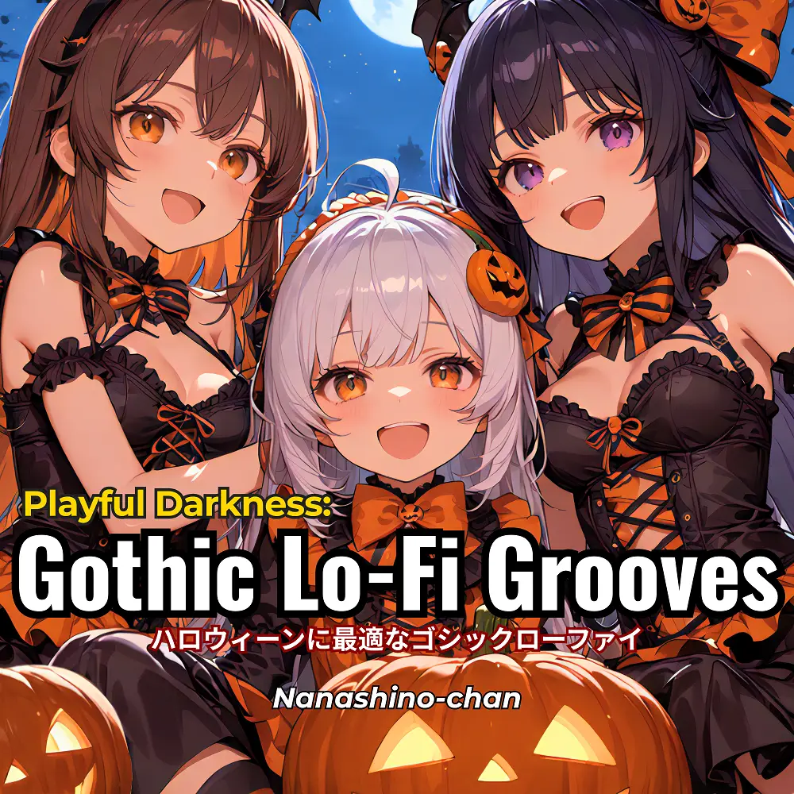

Lo-Fi
Playful Darkness: Gothic Lo-Fi Grooves for Halloween
Nanashino-chan
Explore Playful Darkness: Gothic Lo-Fi Grooves for Halloween by Nanashino-chan: 26 instrumental tracks spanning Lo-Fi. Start with Haunting Echoes / Midnight Reverie, preview the collection and find your favorites on streaming services.
2025-10-04 · Released · 26 tracks · Instrumental
Preview the album
The jacket stays here until you choose a track. Playback uses YouTube.
YOUTUBE PREVIEW
Choose a track to listen
The jacket stays here until you choose a track. Playback uses YouTube.
If playback is unavailable, open the album or track on the streaming service.
Find this album on streaming services
Links marked “search” open search results. Select the album or track on the service.
Track list 26
- 01Haunting Echoes
- 02Midnight Reverie
- 03Shadows in the Mist
- 04Eerie Whispers
- 05Phantom’s Lullaby
- 06Moonlit Melancholy
- 07Chill of the Night
- 08Gothic Groove
- 09Witches' Waltz
- 10Cryptic Beats
- 11Mysterious Murmurs
- 12Ghostly Reflections
- 13Dark Chillwave
- 14Twilight Tranquility
- 15Spectral Serenade
- 16Ethereal Rhythms
- 17Velvet Nightfall
- 18Nocturnal Pulse
- 19Sinister Sway
- 20Cursed Calm
- 2121.Echoes of the Abyss
- 22Shadows and Silence
- 23Hollow Beats
- 24Midnight Mystique
- 25Dark Dreamscape
- 26Final Lullaby
Find a sound for your next post
Copy “Nanashino-chan + track title” and paste it into your social app’s music search. Availability depends on your region and account. Copying the name does not grant usage rights.